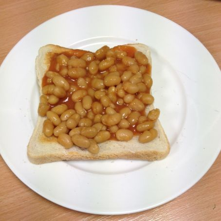

Beans On Toast

Decription
Probably one of the worst dishes to be bestowed upon mankind. Seemingly brought up from the medeival era of humanity where people were aparently given only bread slices and Heinz beans for years. The decendents of these very people kept the anceint tradition of making the british meal of beans on toast. I wish this recipe was not passed on by countless generations but here we are. Enjoy, but aware, it looks nasty.
Ingredients
- 1 tin 13.7 oz (390 g) of Heinz beans (made in England)
- 3 slices of bread
- (pat of butter is optional)
Steps (you should not follow these)
- Put the beans into a small pot over medium low heat.
- Put the bread in the toaster, and make the toast as desired. (If you like, you can butter the toast, but I find it unecessary as the beans are the primary flavor.)
- Stir the beans, and heat until almost boiling, but don't allow to boil. (According to directions on the tin, this will affect the flavor.)
- Place the toast on plates, and spoon ⅓ tin of the beans over the top of each slice. Serve immediately, preferably with a cup of hot tea.
Final Notes
If you made this recipe then I am guessing you did not enjoy it.
I did warn you...
Back to Homepage